Étude de cas · Réseaux sociaux
Modèles réseaux sociaux NIQ
Des modèles de posts et de carrousels LinkedIn pour NIQ for Digital Commerce, après le rachat de Data Impact et FoxIntelligence par NIQ.
- Client
- NIQ for Digital Commerce
- Année
- 2025
- Rôle
- Designer
- Outils
- Figma, PowerPoint
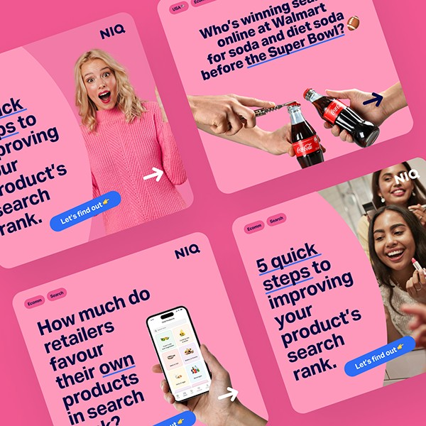
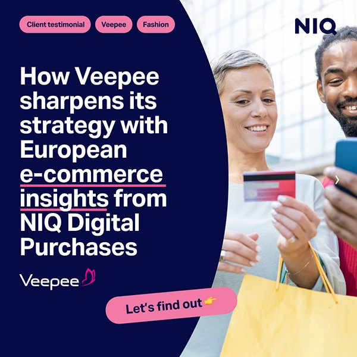
Contexte
Après le rachat de Data Impact et FoxIntelligence par NielsenIQ (NIQ), leur image devait s'aligner sur celle de NIQ tout en gardant leur ton distinctif, jeune et engageant.
Le style social de NIQ est structuré, ce qui correspond à son héritage de marque. Pour la page NIQ for Digital Commerce, nous voulions quelque chose d'un peu plus dynamique.
01
Le point de départ
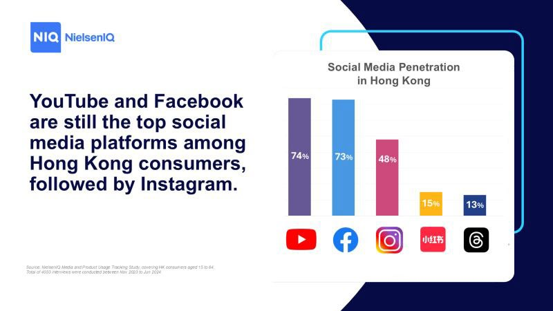
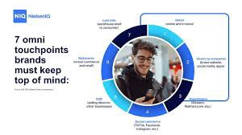
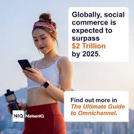
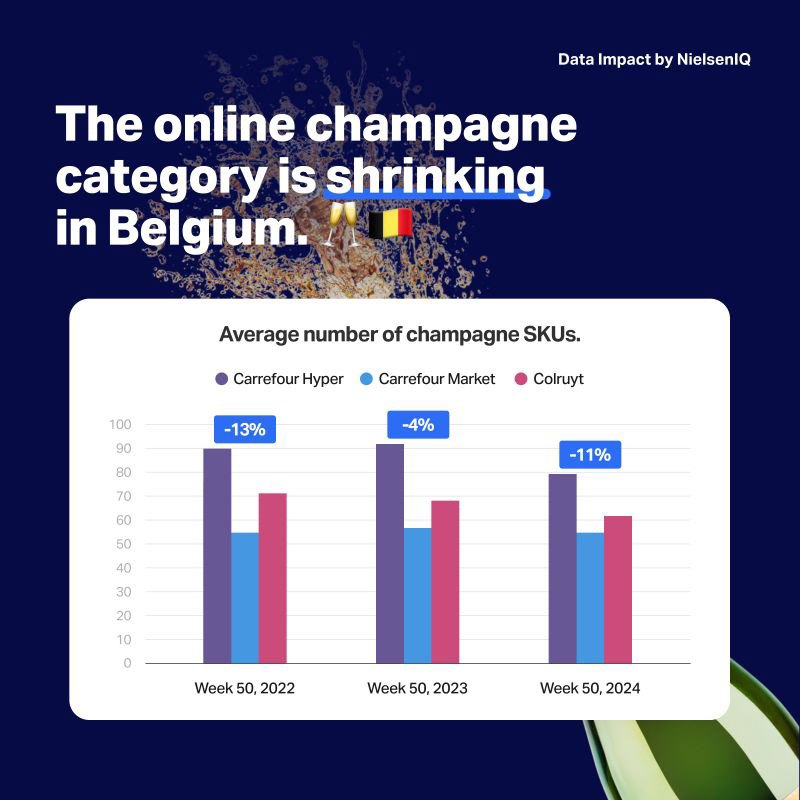
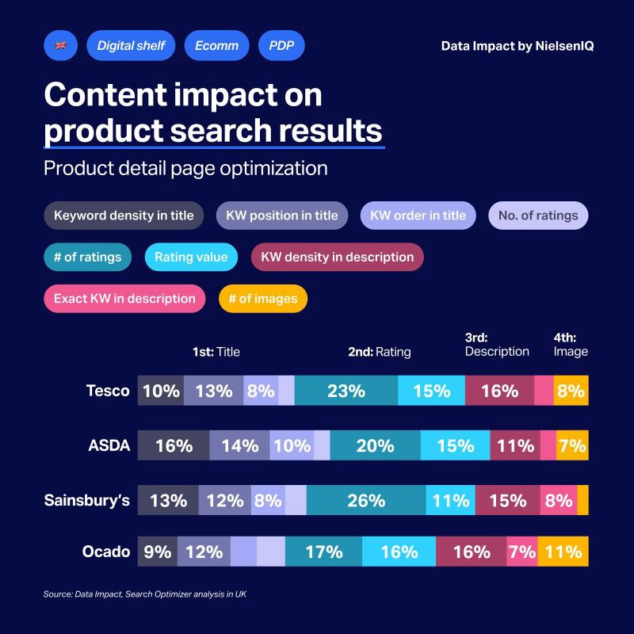
L'objectif
Une série de modèles de posts qui devaient :
- garder un style jeune, ludique et frais,
- respecter la charte de NIQ et ses éléments signature,
- reprendre des visuels clés de Data Impact et FoxIntelligence,
- offrir assez de variété pour un fil LinkedIn vivant,
- être faciles à reproduire dans PowerPoint pour les équipes hors design.
Les carrousels sont systématiquement le format le plus performant de la page : chaque modèle devait donc fonctionner seul ou comme première diapositive d'un carrousel, avec une accroche qui donne envie de faire défiler.
02
L'approche
Design
J'ai travaillé en étroite collaboration avec une responsable de marque chez NIQ pour garder une cohérence d'ensemble, et conçu les posts et carrousels dans Figma.
De NIQ : les cercles signature et des mises en page structurées. De Data Impact : les photos détourées et les boutons, pour garder un peu de sa personnalité après l'intégration.
Une couleur qui a du sens : NIQ alterne surtout ses bleus vif et foncé avec des touches de couleur. Pour NIQ for Digital Commerce, la couleur porte plutôt le contexte : un post sur l'alimentation bio pourra être vert. J'ai décliné les quatre gammes de couleurs prédéfinies de NIQ en une large série de modèles.
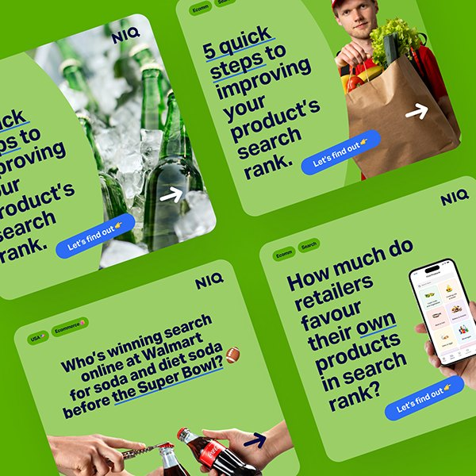
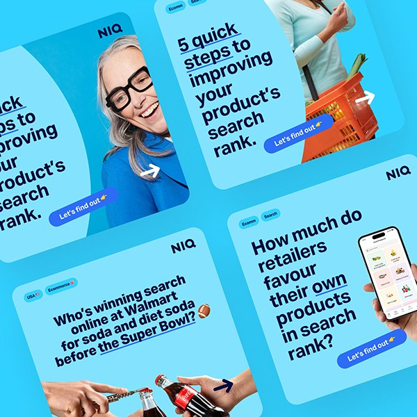
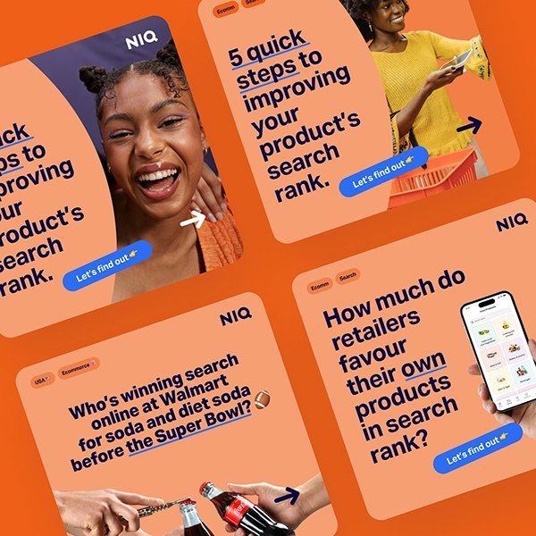
03
Autres formats
Témoignage client
Les modèles se sont facilement adaptés aux formats demandés par d'autres équipes, comme ce carrousel de témoignage client pour Veepee.
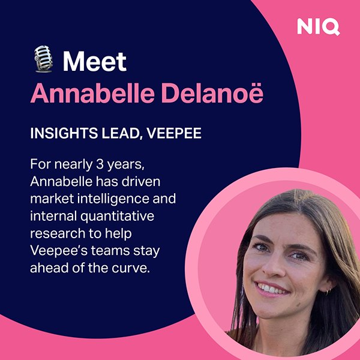
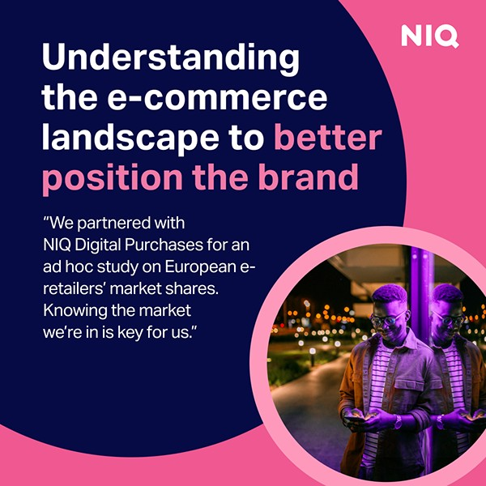
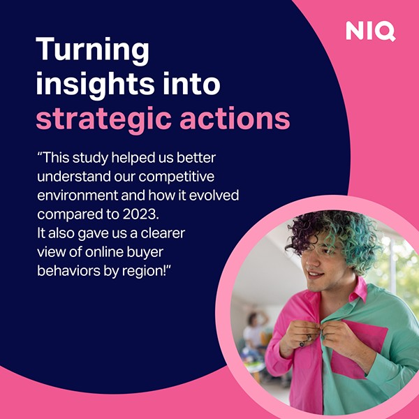
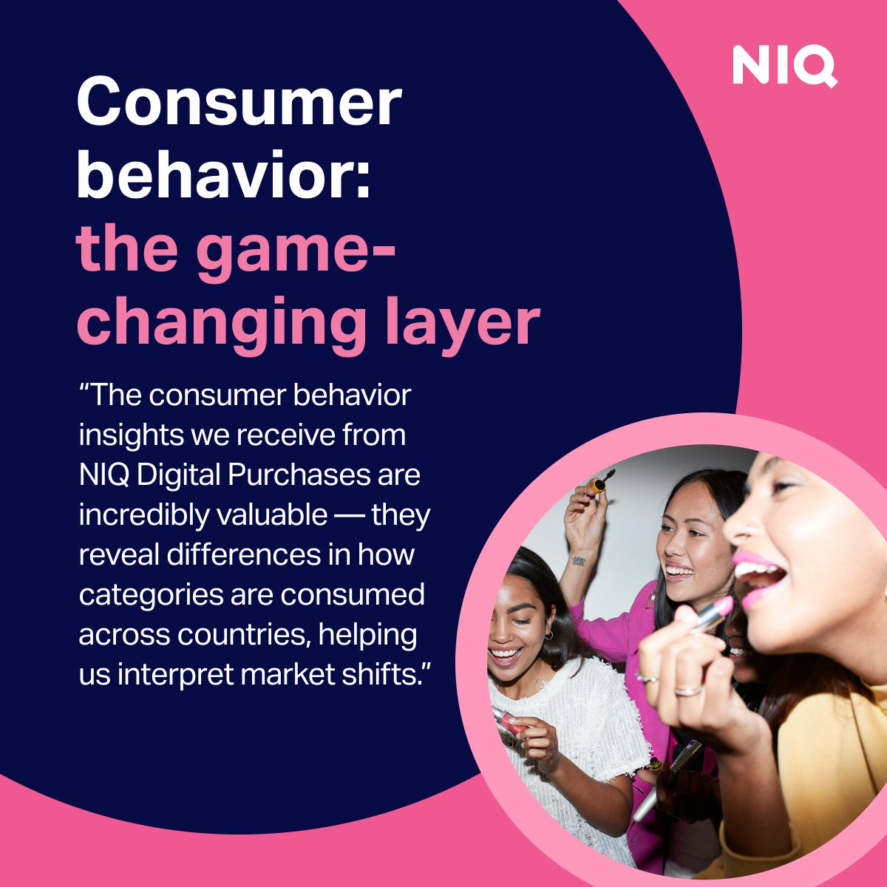
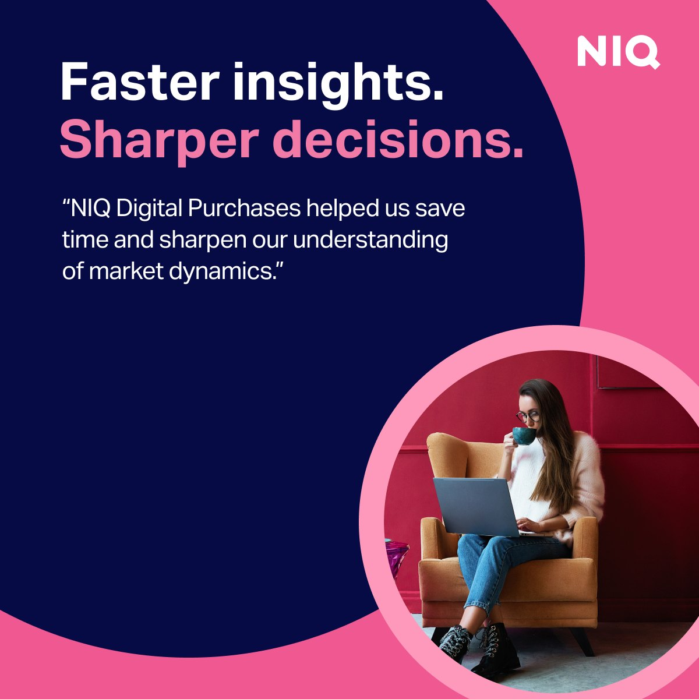
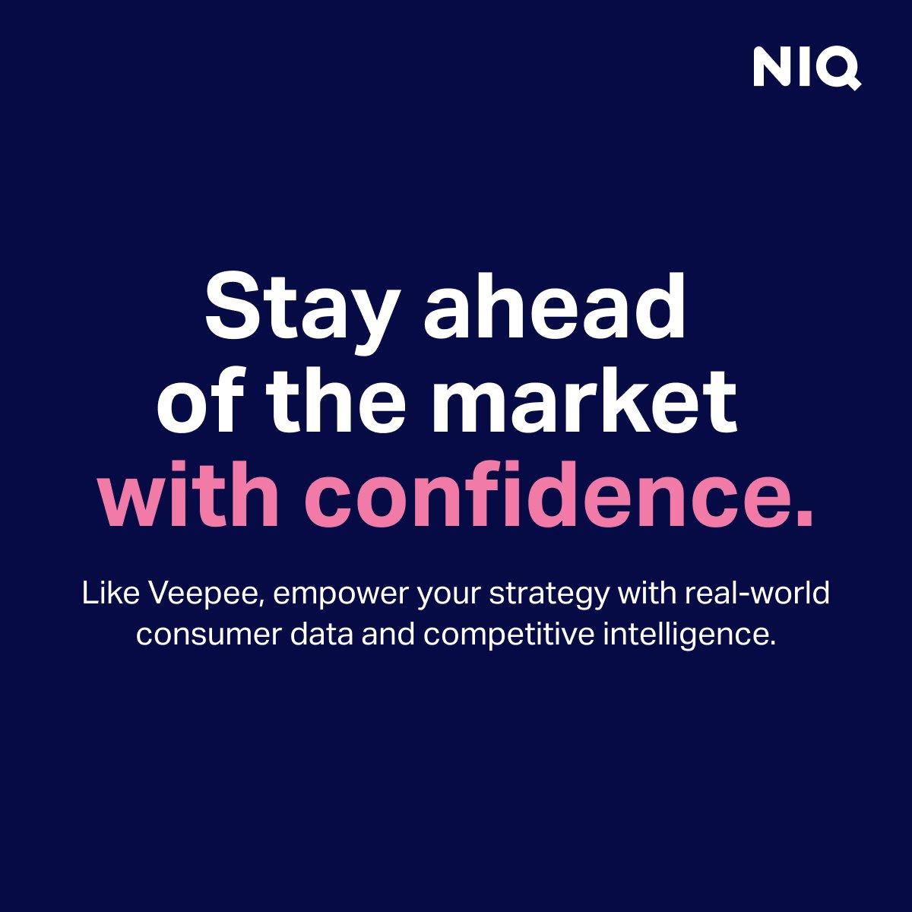
Résultat
Les modèles font le lien entre la marque corporate de NIQ et la personnalité de Data Impact et FoxIntelligence, et ont donné à NIQ for Digital Commerce une présence plus reconnaissable sur LinkedIn.
Le modèle PowerPoint final compte plus de 45 masques de diapositives, pour que les équipes créent rapidement leurs propres visuels. Il a été vite adopté au sein de NIQ, ce qui a rendu les supports externes plus cohérents et considérablement réduit le temps de préparation des webinaires.